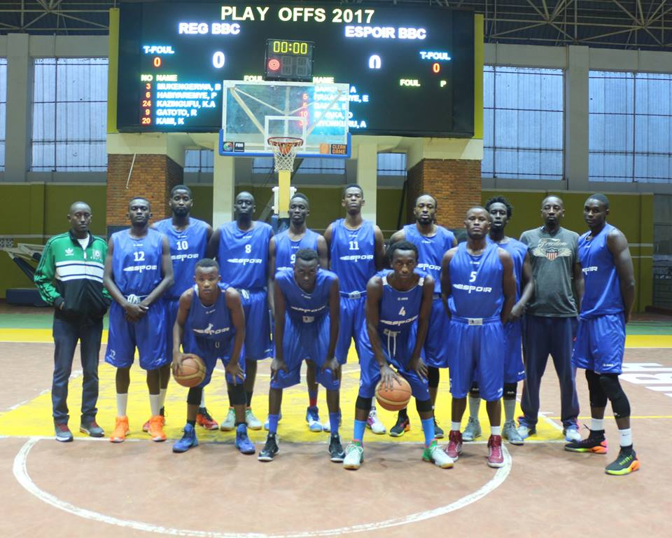

FERWABA website
Home
About Us
ferwaba news
ferwaba match calemdar
contact us
Kugeza ubu abakinnnyi bari mu mwiherero ni 14 baziyongeraho abandi bakina hanze y置 Rwanda. Mu bakinnyi bari bahamagawe mbere hasezerewe batatu (3) ari bo: Munyaneza Eric (APR BBC), Ndoli Jean Paul (IPRC Kigali BBC), Icyishatse Herve (IPRC South BBC). Mu myitozo bakoze kuri uyu wa Mbere ku itangira ry'umwiherero, barebye cyane no kongera imbaraga z'abakinnyi hitabajwe ibyuma byabugenewe (Gym). Mu bakinnyi bakina hanze y置 Rwanda nka Ruhezamihigo Hamza ukina muri Canada ni we wamaze kugera mu Rwanda mu gihe abandi bagitegerejwe barimo; Manzi Dan, Rwabigwi Denis, Gasana Keneth,Twagirayezu Patrice wahuye n段kipazo cy段byangombwa bye byarangije igihe ariko bikaba birimo gukorwa. Abakinnyi 14 batangiye umwiherero: 1. Mugabe Arstide (PATRIOTS BBC) 2. Kubwimana Kazingufu Ali (REG BBC) 3. Sagamba Sedar (PATRIOTS BBC) 4. Ishimwe Parfait (APR BBC) 5. Hagumintwari Steven (IPRC Kigali BBC) 6. Shyaka Olivier(ESPOIR BBC) 7. Kaje Elie (PATRIOTS BBC) 8. Kami Kabange (REGBBC) 9. Nkurunzia Walter (PATRIOTS BBC) 10. Ndizeye Dieudonne (IPRC Kigali BBC) 11. Ruzigande Ally (APR BBC) 12. Niyonsaba Bienvenue (IPRC South BBC) 13. Niyonkuru Pascal (ESPOIR BBC) 14. Ruhezamihigo Hamza (Canada)